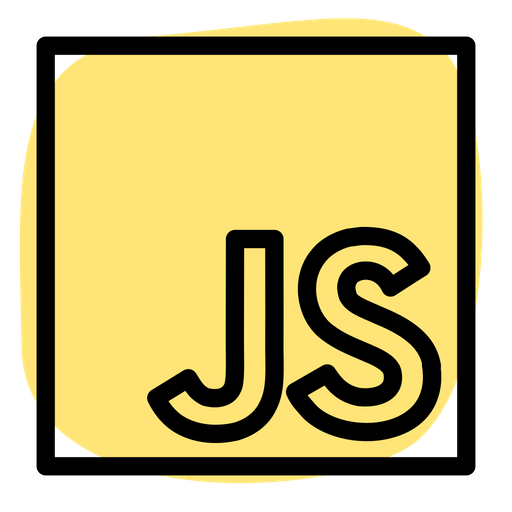

Expertise
-

-

- 
-

Sistema para cadastro de veículos em um estacionamento
Eterna curiosa e aprendiz. Sou apaixonada pelo estudo da vida, especialmente daquela a nível microscópico. Com uma sólida vivência em Microbiologia, decidi expandir meu horizonte para o vasto mundo da tecnologia e, neste momento, meu foco é totalmente voltado ao meu desenvolvimento nesta nova área. Com anos de experiência em laboratório, seja realizando pesquisa quanto no âmbito educacional, adquiri habilidades analíticas aguçadas e um olhar bastante detalhista para a resolução de problemas. Neste momento, estou aberta a oportunidades e novos desafios que me permitam aplicar meu conhecimento técnico e que também me permitam continuar aprendendo mais a cada dia. Estou ansiosa para contribuir em projetos inovadores e realmente fazer a diferença.
Digital Innovation One. Nov 2023. 101h.
Estou disponível para serviços e novas conexões. Contate-me via e-mail e conecte-se comigo através das minhas redes sociais.